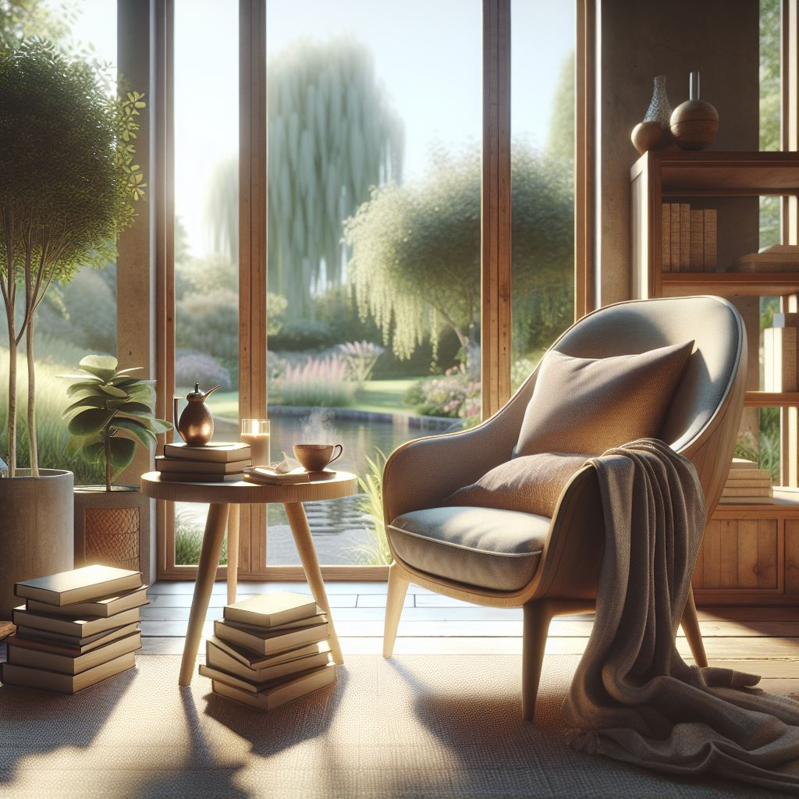

MIS HOBBIES
Lectura
Considero la lectura una parte fundamental para formarse, aprender y crecer. Me gustan las novelas de ciencia ficción, con suspenso y algo de terror. Cada libro es una oportunidad para expandir mis horizontes y sumergirme en nuevas aventuras que desafían mi imaginación.
Paseos a la Playa
.png)
Me gusta desconectarme del caos de la ciudad e ir a la playa, pasar un tiempo de relajación y pasarla bien. Es mi escape perfecto para encontrar paz y renovar energías, dejando atrás el estrés cotidiano y conectando con la naturaleza.
Música
.png)
Siento que me complemento con la música y los distintos estados de ánimo, por lo que la utilizo para trabajar, estudiar, viajar. Prácticamente en todo momento. Es mi compañera constante que me ayuda a mantener el ritmo y la motivación en cada actividad que realizo.
Análisis
En resumen, tus hobbies reflejan que eres una persona equilibrada, con una mentalidad en constante crecimiento. La lectura alimenta tu curiosidad y creatividad, abriéndote a nuevas ideas que te ayudan a mantener una visión innovadora, especialmente en tu proceso de reinvención profesional. El paseo por la playa te brinda el descanso y la renovación que necesitas para desconectarte del estrés y recargar energías, lo que es esencial para mantener un equilibrio emocional y físico en tu vida diaria. La música, como compañera constante, te mantiene motivada y enfocada, ayudándote a establecer el ritmo adecuado para cualquier actividad, desde el trabajo hasta el estudio.
Estos intereses no solo enriquecen tu vida personal, sino que también complementan tus aspiraciones profesionales. La combinación de estos hobbies te proporciona las herramientas necesarias para seguir evolucionando y adaptándote a los nuevos desafíos, tanto en el ámbito de la fisioterapia como en tu incipiente carrera tecnológica.